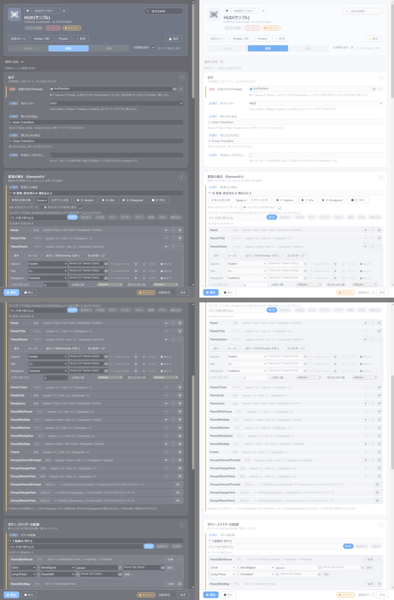
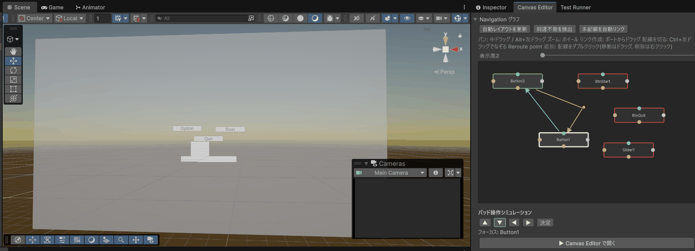

最終更新日: 2026-10-12
Canvas Editor は、Canvas(UI 画面)データを組み立てるためのウィンドウです。設定は「やりたいこと」ごとのカードに分かれていて、要素やボタンが何十あっても、1 要素 = 1 行の一覧で見渡せます。できること:
Tools > D-Drive > Editors > Canvas Editor、または Canvas データの Inspector の一番上にある「Canvas Editor で開く」、または Asset Browser でダブルクリック
| 部品 | 説明 |
|---|---|
| ◀ ▶ と名前のボタン | 同じカテゴリの Canvas データを順に切り替えます。名前のボタンで最近使ったものも選べます。 |
| 設定を検索 | 欄の名前・説明・検索語に加えて、要素・ボタン・埋め込みのパスにも一致する設定だけを出します(例: Start / ボタン / 入れ子)。一致する要素があるときは、その一覧が自動で開いて絞り込まれます。 |
| 警告・変更のチップ | 検証の警告数と、まだ保存していない変更の数。 |
| 確認用シーン | EventSystem だけを置いた専用の空シーン(CanvasPreviewScene)に切り替え、そのまま画面を開きます(Selectable / 要素の自動収集も実行します)。すでに確認用シーンにいるときは、シーンは開き直さず表示だけやり直します(Appear / Idle をやり直す)。右クリックで「このシーンに配置」も選べます。 |
| Prefab で開く | この Canvas の Prefab をプレハブモードで開きます。要素を選んで Unity 標準の移動 / 回転 / リサイズツールで動かせます(Ctrl+Z で戻せます)。 |
| Project / ＋ 新規 / 固定 | Project でハイライト / 新しい Canvas データを作る / 固定を ON にすると Project の選択が変わっても対象が切り替わりません。 |
| かんたん / 標準 / 詳細 | 見せる欄の量。かんたん=必須の欄だけ(Prefab)/ 標準=よく使う欄まで / 詳細=すべて(埋め込み・スライダー・重ね順など)。 |
| 未調整を隠す | 詳細モードで、既定値のままの設定をカードごとの「未調整の設定」に折りたたみます。 |
| ↺ すべて既定に戻す | 既定値と違う設定を既定に戻します(確認あり。管理情報と、要素・配線・埋め込みの一覧は対象外)。各欄の右の ↺ でその欄だけ戻せます。 |
| 選択に追従 | Hierarchy・プレハブモード・確認用プレビューで選んだ GameObject に合わせて、編集対象を自動で切り替えます(埋め込みの子の要素なら子の Canvas データ、それ以外は親。該当する要素の行が強調されます)。入力中の欄があるあいだは切り替えません。「固定」が ON の間は追従しません(チェックが灰色になります)。 |
| ▶ 再生 / ■ 停止(下部の固定バー) | いま開いているシーン(プレハブモードのときはそのステージ)に、実際のゲームと同じ仕組み(UiManager)で画面を開く / 片付けます。再生中の ▶ は「やり直し」になります。 |
| 変更 N 件 / 自動保存 / 保存 | まだ保存していない変更の数。「保存」でアセットに書き込みます(保存のたびに版数が進みます)。ウィンドウを閉じる・対象を切り替えるときに未保存なら確認します(自動保存が ON なら聞かずに保存)。 |
Ctrl+Z / Ctrl+Y で戻せます。ステータス行(ヒーローの下)には、操作の結果や「プレビュー表示中」が出ます。
画面の実体(Prefab) と 表示レイヤー を設定する(作り方)
「要素の動き」「ボタンの配線」「埋め込み Canvas」「カーソル移動」の 4 つの欄は、見出しに要約(例: 15 要素・設定済み 6・埋め込み 3)を出した折りたたみです。開いた直後はすべて畳んであります(使う欄だけ開きます)。
| 部品 | 説明 |
|---|---|
| 1 件 = 1 行 | 要素名(クリックでその要素を選択)・種類のチップ・要約・操作ボタンが 1 行に並びます。行の「⚙」でその行だけが展開します。 |
| 絞り込み | 一覧の上の欄にパスや内容の一部を入れる / 「すべて・設定済み・未設定」 / 種類のチップ(ボタン・スライダー・テキスト・画像・パネル・埋め込み)。 |
| 件数 | 「15 要素中 設定済み 6」のように出ます(絞り込み中は「表示 n」も)。 |
| 20 行を超えたら | 一覧は必要な行だけを描く表示になり、スクロールしても軽く動きます。 |
| 行の ⚠ | その行に検証の警告・エラーがあるときに出ます。マウスを合わせると内容が出ます。 |
| 一覧そのもの(詳細モード) | 各欄の最後に、リストを直接編集する欄(要素の追加・削除・並べ替え、すべてのフィールド)があります。 |
| 欄 | 説明 |
|---|---|
| 画面の実体(Prefab)【必須】 | 開く Canvas の Prefab。未設定だと空の Placeholder になります。 |
| 表示レイヤー / 同じレイヤー内の重ね順 | HUD / Menu / Popup / Overlay / Loading。あとのレイヤーほど手前に積まれます。重ね順(SortOffset)は同じレイヤーの中の微調整です。 |
| 開くとき / 閉じるときの演出 | None / Fade / Slide / Scale / Anim。秒数・イージング・スライドの移動量(Anim は AnimId)も決められます。 |
| 戻る操作で閉じる / 背後の入力をブロック(モーダル)/ 開いている間ゲームを止める | 戻る操作(CloseTop)で閉じる対象に含める / Popup として開いたとき背後の入力を受け付けない / 開いている間 Gameplay を止める。 |
| 動作の取り決め(Pool / ポーズ / ネット) | 詳細モード。共通の動作設定です。 |
Prefab の中の要素ごとに、出るとき(Appear)・出ている間(Idle。Appear が終わってから始まり、閉じ始めで止まります)・消えるとき(Disappear)の動きを決めます。どれも設定しない区間は「レイヤー既定」(UiLayerSettings の DefaultAppear / DefaultDisappear)が使われます。Idle に既定は無いので、光らせたいボタンだけ Pulse などを入れてください。
| 操作 | 説明 |
|---|---|
| 要素を自動収集 | Prefab 内の Graphic(画像・テキスト)/ UiButton などから要素の行を作ります(既存の行は保持します。登録済みの埋め込みの配下は子の担当なので集めません)。 |
| プリセット / 全ボタンに反映 | 選んだプリセットを、Prefab 内の全 UiButton の Appear にまとめて入れます(行が無ければ足します)。 |
| ▶ 全 Appear / ▶ 全 Idle / ▶ 全 Disappear / ■ 全て停止 | 設定済みの全要素の同じ区間をまとめて再生します。「全て停止」は止めて再生前の状態(初期位置など)へ戻します。 |
| Idle を流す(プレハブモード) | オンにすると、プレハブモードのまま、Idle を割り当てた全要素(埋め込みの子の分も含む)の Idle が SceneView で動き続けます。選んだ要素の Idle だけ止まり、編集の邪魔になりません。止める・保存の直前・プレハブモードを閉じる・対象の切り替え・Play Mode に入るときに、流す前の値へ戻ります(Prefab に途中の値は残りません)。確認用シーンでは Idle は最初から流れます。入れ子 Prefab の要素を流している間は、Overrides の Apply をする前にオフにしてください。 |
| ▶ 再生時にその要素を選択 | 行の ▶ を押したとき、再生する要素を選択状態にします(設定はエディターに保存されます)。 |
| 部品 | 説明 |
|---|---|
| 要素名 | Prefab ルートからのパス(ルート自身は「(ルート)」)。クリックでその要素を選択して Inspector に出します(プレハブモード中はステージ内、確認用シーンの表示中はプレビューの実体、どちらも無ければ Prefab アセット内の要素を Ping)。 |
| 種類のチップ | ボタン / スライダー / テキスト / 画像 / パネル。 |
| 要約 | 「Appear: PopIn / Idle: Pulse / Disappear: FadeOut」。[Catalog] の名前や UiTweenData の名前もそのまま出ます。 |
| ▶ / ■ | 最初に割り当てた区間を、確認用シーン(プレハブモードならステージ内の実要素)で再生 / 止めて再生前の状態へ戻す。未表示なら自動で画面を開きます。 |
| ↺ | この要素の動き・出現の遅れ・SE を未設定に戻します(Ctrl+Z で戻せます)。 |
| ⚙(展開) | その行だけが展開し、下の詳細が出ます。 |
| 部品 | 説明 |
|---|---|
| 選択 / フォーカス / 選択して移動(Prefab を開く) | 要素を選択 / 選択して SceneView のカメラをその要素の矩形へ寄せる / Prefab をプレハブモードで開いてその要素を選ぶ(Unity 標準の移動 / リサイズツールでそのまま動かせます)。 |
| 他の要素へコピー | この要素の 3 区間の設定を、同じ Canvas の他の要素へまとめて配ります。 |
| Appear / Idle / Disappear のドロップダウン | 「なし」/ 組み込みプリセット名 / [Catalog] 名前(プロジェクト独自に登録した動き)。「なし」を選ぶとその区間の設定は消えます。 |
| UiTweenData の直接指定 | UI Tween データを入れる欄。入れるとドロップダウン側のプリセットは消えます(どちらか一方だけが有効)。 |
| ✎ Tween Editor | 直接指定があるときだけ押せます。UI Tween Editor が開き、この行の実際の要素が自動でプレビュー対象に選ばれた状態で Track を編集できます。 |
| ▶ / ■ / ⏸ 一時停止 / 状態表示 | その区間だけを実要素で再生・一時停止・停止します。押すたびに再生前の状態へ戻してから再生します。 |
| 出現の遅れ(秒)/ 出現の SE / 消えるときの SE | Open 開始からこの秒数だけ遅らせて Appear を始めます(スタッガー演出用)/ 出現・消滅のときに鳴らす効果音。 |
埋め込みの子の要素は、親の一覧には展開されません。子ごとに 1 行の要約(パス → 子の名前: 子の ElementFx n 行(親で上書き n 行))と「開く」が出ます。「開く」で編集対象が子の Canvas データに切り替わり、子の中身は子のエディターで見ます。親から見たパスで書いた「親での上書き」の行は、一覧に通常の行として出ます。同じ行の「上書きを整理…」で、対象の行を一覧した確認のあとにまとめて整理できます(Ctrl+Z 1 回で戻せます)。
「ボタンの配線(Buttons)」の一覧は、Prefab 内の UiButton ごとに 1 行です。
| 部品 | 説明 |
|---|---|
| パス / 種類のチップ / 要約 | ボタンのパス(クリックで選択)・「ボタン」(Prefab の中に無いときは「見つからない」)・「Click → SendSignal 'pause' / LongPress → CloseSelf」のような配線の要約。 |
| ＋ 配線 | そのボタンに配線を 1 本足します(トリガーはまだ使っていないもの。埋め込みの配下では子が使っているトリガーも避けます)。Ctrl+Z で戻せます。 |
| ⚙(展開) | そのボタンの配線 1 本 = 1 行が出ます。 |
展開した配線の行:
| 部品 | 説明 |
|---|---|
| トリガー | どの操作で動くか: Click / DoubleClick / LongPress(UiButton の LongPressSec が必要)/ Repeat。 |
| アクション | None / OpenCanvas / CloseSelf / CloseTop / SendSignal / PlayPresentation(実行時は未対応で、行に注記が出ます)/ ActivateEmbedded / DeactivateEmbedded / ToggleEmbedded。スライダー用の SetOption はここでは選べません。 |
| 対象(Canvas) | OpenCanvas のときだけ出る欄。開く Canvas データを入れます。 |
| シグナルのキー | SendSignal のときだけ出る欄。通知名を入れて Enter(または欄の外をクリック)で確定します。プログラマーと名前を決めておきます。 |
| 切り替える埋め込み | 埋め込みを出し入れするアクションのときだけ出る欄。この Canvas に登録した埋め込みの RootPath から選びます。先頭の「(このボタンが属する埋め込み)」は、子の中のボタンで自分自身を隠すときに使います。 |
| SE | 押したときに鳴らす効果音(任意)。空ならレイヤー既定の SE / Skin の SE が使われます。 |
| 削除 | その配線を 1 本取り除きます。 |
| 行の下の ⚠ | その場で直せる問題です(開く Canvas が未設定 / シグナルのキーが未設定 / 同じトリガーの重複 など)。 |
Prefab の中に UiButton が見つからない配線(パスのずれ)は、「見つからない」のチップ付きの行として残ります(展開すると注意が出ます)。埋め込みの子の配線は展開されず、1 行の要約と「開く」だけが出ます。スライダーの配線(Sliders)は、詳細モードの通常のリスト欄(Trigger・Action・SignalKey・Option・ThrottleSec)で編集します。
ある Canvas の Prefab の中に別の Canvas の Prefab を入れ子で置くとき、子の動き(ElementFx)や配線は子の Canvas データに 1 か所で持ち、親を開いたときもそのまま効きます。同じ子を別の親に入れても書き直す必要がありません。
展開(⚙)で出る欄: RootPath(親 Prefab ルートからの相対パス。Enter で確定、`\` は `/` に直します)・子の Canvas データ・無効で始める・表示 / 非表示(作業用)・削除(登録を外す。親の ElementFx の行は消えません)。
| 項目 | 説明 |
|---|---|
| 子の設定が効くもの | 子の Canvas データの ElementFx / Buttons / Sliders。子の Prefab の中のパス(例: Panel/BtnX)のまま書けます。 |
| 親のものが使われるもの | Navigation / FirstSelected / レイヤーの既定 / 開閉の演出 / Layer・SortOffset / ポーズ・モーダルの設定。子のこれらは無視されます(パッドの移動先を子の中まで張りたいときは、親の Navigation に OptionRoot/Panel/BtnX のように書きます)。 |
| 親の設定が優先 | 親の Canvas データに、埋め込み配下の同じ要素(親から見たパス)の行があるときは、親の行が勝ちます(「親での上書き」)。「この画面ではここだけ演出を変えたい」ときに使います。 |
| 登録するときの整理 | 登録の前に親で自動収集していると、入れ子の中の要素が親の行として集まっています。「登録」を押す(または RootPath / 子を変える)と、既定のままの行は確認なしで取り除き、設定のある行は 1 回確認します。1 つの Undo グループです(キャンセルすると何も変えません)。 |
| CloseSelf | 埋め込み時は親の Canvas を閉じます。CloseTop・OpenCanvas は変わりません。 |
| 子を単独で開く | 同じ子の Canvas データを、単独の画面としても埋め込みとしても使えます。 |
| 項目 | 説明 |
|---|---|
| 無効で始める | 展開した行のチェック(Undo 対応)。オンの子は、親を開いても出ません(子の Appear も始まりません)。確認用プレビューは開き直すと反映されます。 |
| 表示 / 非表示(作業用) | 作業のために子の表示を一時的に切り替えます(データにも Prefab にも保存されません)。プレハブモードを開いていればそちらが優先で、SceneView の表示だけを切り替えます(もう一度押すか、Hierarchy の目のアイコンで戻ります)。確認用プレビューだけのときは実際に有効 / 無効を切り替えます(子の Appear / Disappear も再生されます)。 |
| 配線のアクション | ActivateEmbedded / DeactivateEmbedded / ToggleEmbedded を選ぶと、対象の埋め込みを選ぶ欄が出ます。 |
見出しに「8 要素・リンク 14 本・最初 = Panel/BtnPause」のような要約が出ます。開くと、次の部品があります。
| 部品 | 説明 |
|---|---|
| Selectable を自動収集 | Prefab 内の uGUI の Selectable(Button / Slider / Toggle など)を探して Navigation に行を足します(既存の行は残ります。4 方向は空 = Unity 自動のまま)。UiButton / UiSlider は拾いません。UiButton はグラフにはノードとして出るので、グラフでリンクを張ってください。 |
| 自動レイアウトを更新 | ドラッグで動かしたノード位置・追加した Reroute point を破棄し、Prefab のレイアウトどおりに戻します。 |
| 到達不能を検出 | どこからもフォーカスが来られない要素を赤枠にして一覧します。 |
| 未配線を一覧 | リンクは張りません。4 方向とも空(Unity 自動のまま)の要素を一覧するだけです。 |
| 表示高さ | グラフの高さ(320〜900)。 |
| パッド操作シミュレーション | 「▲」「▼」「◀」「▶」でフォーカスを移し、「決定」でフォーカス中の UiButton(無ければ uGUI のボタン)を押します(配線した OpenCanvas などが実際に動きます)。確認用シーンで開いている間だけ押せます。グラフでは現在位置が白い太枠になり、下に「フォーカス: …」が出ます。 |
| 最初に選ばれる要素(FirstSelected) | 欄の下の文字欄。開いた直後にカーソルが乗る要素のパスです。Prefab の中に無い名前はエラーになります。グラフの右クリックでも設定できます。 |
Prefab 内の全ボタン・スライダーが、画面上の位置とだいたい同じ配置でノード(四角)として出ます。配線を編集するための図であり、UI の見た目のプレビューではありません。
| 操作 | 説明 |
|---|---|
| リンクを張る | ノードの四辺の丸いポート(▲上 / ▼下 / ◀左 / ▶右)を左ドラッグして、別のノードの上で離す。 |
| 矢印の色 | 水色 = Up / オレンジ = Down / 黄色 = Left / 紫 = Right。先端の三角が行き先を指します。 |
| ノードの枠色 | 黄土色 = Navigation にあるが Prefab 内に実体が無い / 緑 = FirstSelected / 赤 = 到達不能 / 白い太枠 = パッド操作の現在フォーカス。 |
| パン / ズーム | マウス中ボタンドラッグ、または Alt + 左ドラッグで移動。ホイールで拡大縮小。 |
| 配線を切る | Ctrl + 左ドラッグで、切りたい配線をなぞる。 |
| Reroute point | 配線をダブルクリックで追加(移動はドラッグ、削除は右クリック)。ノード位置・Reroute point は Canvas データに保存されます(実行時の動作には使いません)。 |
| ダブルクリック | その要素を Hierarchy で強調表示(Ping)。 |
| 右クリックメニュー | FirstSelected にする / 各方向のリンクを削除 / リンクを全て削除 / 要素を Ping。 |
詳細モードのカード。出現・終了などの節目で、別の SE / VFX などを一緒に再生する設定(Events)です。
一覧に出る名前・カテゴリ・説明・タグ・アイコン・担当者・仕様書 URL・変更メモ。Id / 版数 / 最終更新者 / 最終更新日時は読み取り専用で一行に出ます。
問題は、該当する欄の下に色付きの 1 行(赤 = Error、黄 = Warning、青 = Info)で出ます。一覧の欄(要素・配線・埋め込み)では、欄の下には最大 3 件までで、該当する行の ⚠ に内容が出ます。どの欄にも当てはまらない問題は「その他の検証」に集まります。自動で直せるものには右に「修正」ボタンが出ます。文言と対処は Canvas データのよくある警告。